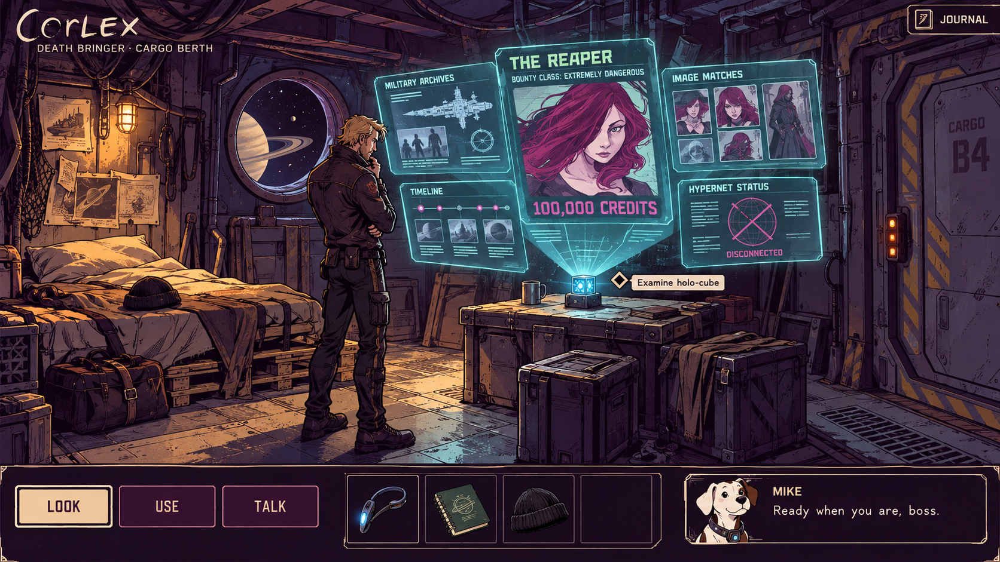
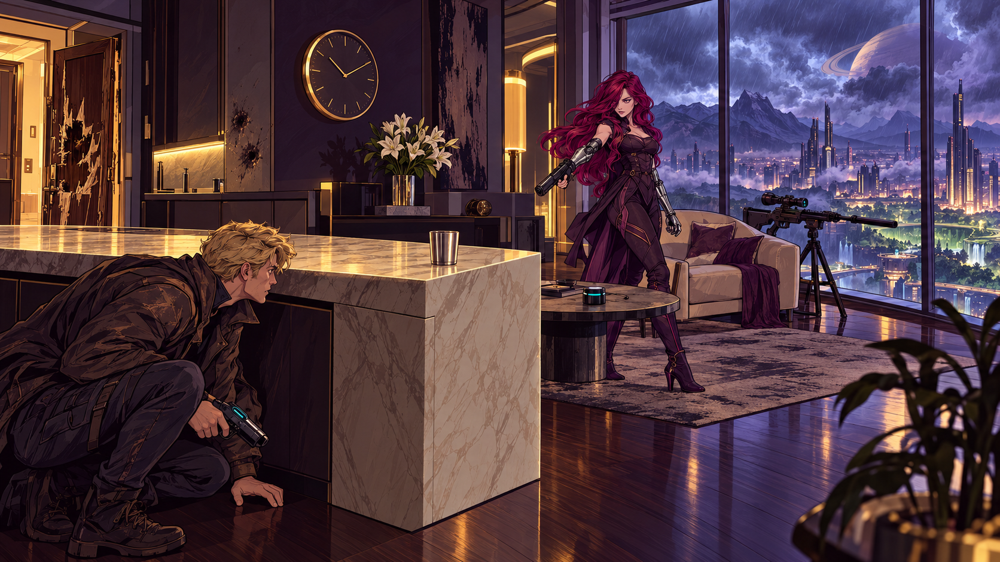
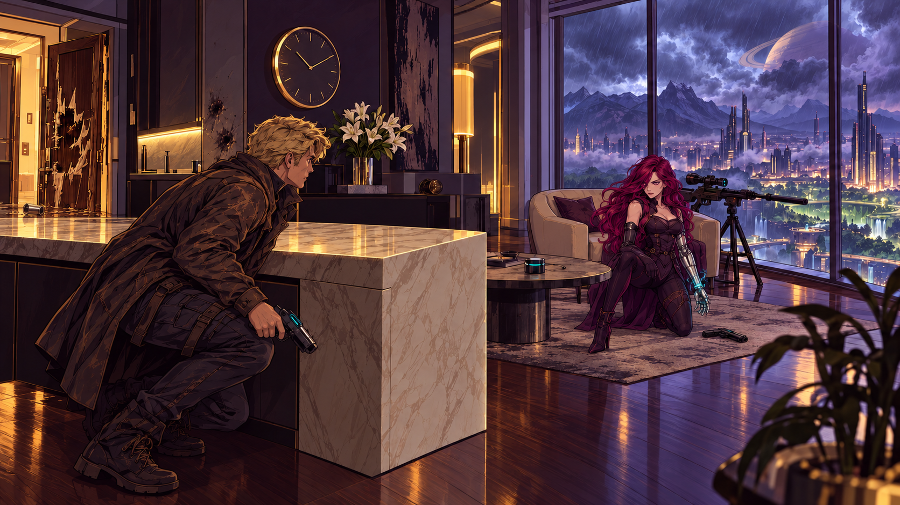

One dangerous bounty. Two ways into Corlex’s world.
NEW DEMO · TENGRA BUILDING
Face the Reaper
You are pinned behind a kitchen island. Amanda has a gun, a deadline, and very little patience. Observe the room, talk your way into a truce, and create an opening.
No timer. Mouse and touch supported.
DEATH BRINGER · INVESTIGATION DEMO
Your first move
Open the duffel beside the bunk and collect your earpiece and notebook. Then find a way to get Mike connected to the hypernet.
Explore. Click objects to open close-ups and discover what you can do.
Use your gear. Select an inventory item, then click an object to use it there.
Build the case. Solve the archive puzzles and connect the evidence about the Reaper.
Stuck? Click Mike for a hint. Press H to reveal objects, J for your notebook, or Esc to close a view.
Your progress saves automatically in this browser.

NO HYPERNET CONNECTION
Examine holo-cube
Tap the scene or choose an object below.
MIKEReady when you are, boss.
CORLEX / FIELD NOTES
The Reaper
INVESTIGATION COMPLETE
Next stop: Titan.
The door slides open. Corlex pockets the case file and steps into the tanker’s cold corridor.
Amanda. Special Forces. The Reaper.
You have a name. Now you have to find her.
CHAPTER 19 / ANGEL CITY
A moment of silence.


Behind the island · stay low
◒
EQUIPMENTSelect gear, then a target.
AMANDA
Who the hell are you?
CORLEX / OBSERVATION
Click to investigate · Select an item, then an object to use it · 1 Look 2 Use 3 Talk · H Hints · J Journal · Esc Cancel ·